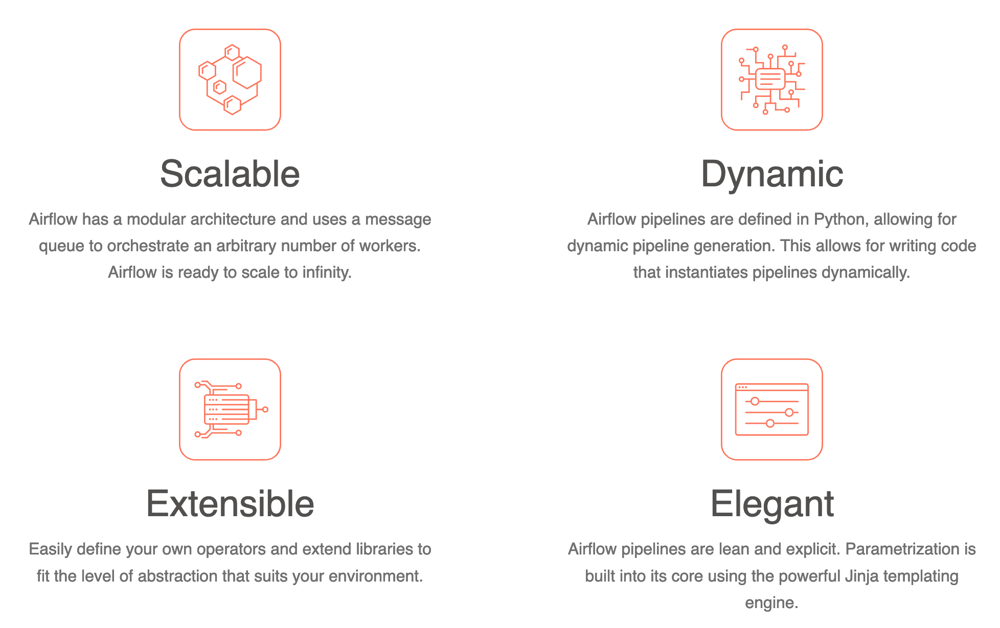
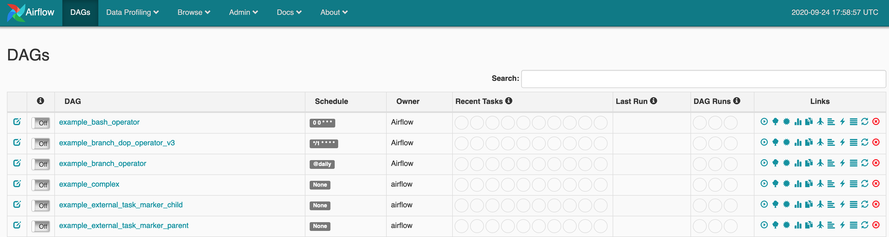
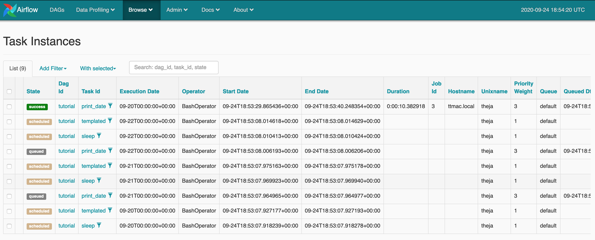
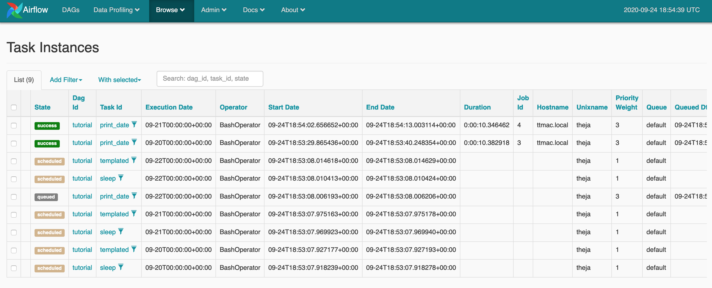
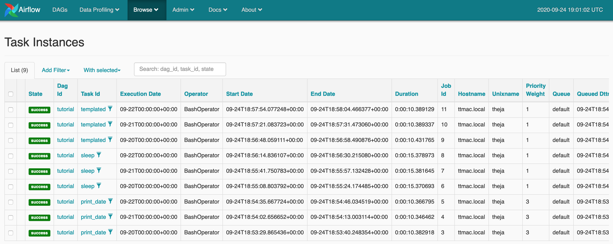
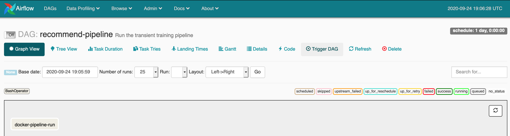
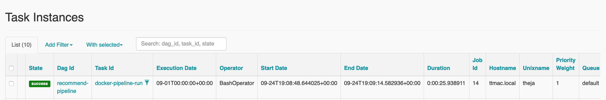

While cron and cron based scheduling is great, it becomes harder to manage if certain jobs fail and other scheduled jobs depend on their outputs.
Workflow tools help with resolving these types of dependencies.
They also allow for version control of objects beyond code.
These tools have additional capabilities such as alerting team members if a block/task/job failed so that someone can fix and even manually run it.
It is beneficial for the whole organization if they can use a similar tool:
We will go through Apache Airflow as an example workflow tool. There are many others, as we mentioned before.

Airflow works with graphs (spcifically, directed acyclic graphs or DAGs) that relate tasks to each other and describe their ordering.
Each node in the DAG is a task, with incoming arrows from other tasks implying that they are upstream dependencies.
Lets install the airflow package and get a server running. From the quickstart page
# airflow needs a home, ~/airflow is the default,
# but you can lay foundation somewhere else if you prefer
# (optional)
export AIRFLOW_HOME=~/airflow
# install from pypi using pip
pip install apache-airflow
# initialize the database
airflow initdb
# start the web server, default port is 8080
airflow webserver -p 8080
# start the scheduler
airflow scheduler
# visit localhost:8080 in the browser and enable the example dag in the home page
For instance, when you start the webserver, you should seen an output similar to below:
(datasci-dev) ttmac:lec05 theja$ airflow webserver -p 8080
____________ _____________
____ |__( )_________ __/__ /________ __
____ /| |_ /__ ___/_ /_ __ /_ __ \_ | /| / /
___ ___ | / _ / _ __/ _ / / /_/ /_ |/ |/ /
_/_/ |_/_/ /_/ /_/ /_/ \____/____/|__/
[2020-09-24 12:55:50,012] {__init__.py:50} INFO - Using executor SequentialExecutor
[2020-09-24 12:55:50,012] {dagbag.py:417} INFO - Filling up the DagBag from /Users/theja/airflow/dags
/Users/theja/miniconda3/envs/datasci-dev/lib/python3.7/site-packages/airflow/models/dag.py:1342: PendingDeprecationWarning: The requested task could not be added to the DAG because a task with task_id create_tag_template_field_result is already in the DAG. Starting in Airflow 2.0, trying to overwrite a task will raise an exception.
category=PendingDeprecationWarning)
Running the Gunicorn Server with:
Workers: 4 sync
Host: 0.0.0.0:8080
Timeout: 120
Logfiles: - -
.
.
(truncated)
.
.
Similarly when the scheduler is started, you should see:
(datasci-dev) ttmac:lec05 theja$ airflow scheduler
____________ _____________
____ |__( )_________ __/__ /________ __
____ /| |_ /__ ___/_ /_ __ /_ __ \_ | /| / /
___ ___ | / _ / _ __/ _ / / /_/ /_ |/ |/ /
_/_/ |_/_/ /_/ /_/ /_/ \____/____/|__/
[2020-09-24 12:57:27,736] {__init__.py:50} INFO - Using executor SequentialExecutor
[2020-09-24 12:57:27,774] {scheduler_job.py:1367} INFO - Starting the scheduler
[2020-09-24 12:57:27,775] {scheduler_job.py:1375} INFO - Running execute loop for -1 seconds
[2020-09-24 12:57:27,775] {scheduler_job.py:1376} INFO - Processing each file at most -1 times
[2020-09-24 12:57:27,775] {scheduler_job.py:1379} INFO - Searching for files in /Users/theja/airflow/dags
[2020-09-24 12:57:27,785] {scheduler_job.py:1381} INFO - There are 25 files in /Users/theja/airflow/dags
[2020-09-24 12:57:27,785] {scheduler_job.py:1438} INFO - Resetting orphaned tasks for active dag runs
[2020-09-24 12:57:27,802] {dag_processing.py:562} INFO - Launched DagFileProcessorManager with pid: 5109
[2020-09-24 12:57:27,812] {settings.py:55} INFO - Configured default timezone <Timezone [UTC]>
[2020-09-24 12:57:27,829] {dag_processing.py:776} WARNING - Because we cannot use more than 1 thread (max_threads = 2) when using sqlite. So we set parallelism to 1.
Following this, we can go to localhost:8080 to see the follwoing:

When the above sequence of commands was ran, airflow created a config file in ~/airflow folder. This config file has about 1000 lines.
(datasci-dev) ttmac:~ theja$ cd airflow/
(datasci-dev) ttmac:airflow theja$ less airflow.cfg
[core]
# The folder where your airflow pipelines live, most likely a
# subfolder in a code repository. This path must be absolute.
dags_folder = /Users/theja/airflow/dags
# The folder where airflow should store its log files
# This path must be absolute
base_log_folder = /Users/theja/airflow/logs
.
.
(truncated)
.
.
(datasci-dev) ttmac:airflow theja$ wc -l airflow.cfg
1073 airflow.cfg
Airflow manages information about pipelines through a database. By default is it sqlite (we could change this to something else if needed). This is initialized via the initdb argument.
The scheduler executes out tasks on workers (machines).
The webserver allows us to interact with the task scheduler and the database.
The key idea is that We need to create a python file to define the workflow DAG.
A key module that we will import is called the BashOperator, which allows us to run arbitrary commands (e.g., docker run image) as long as the dependencies are there (e.g., the docker daemon, the local image registry, and command line utility).
There are a set of parameters that one should set for any workflow. For instance, who is the owner of this workflow, and if they need to be alerted by email.
We next create an instance of the DAG class.
We can define our command line task using the BashOperator. There are various kinds of operators available. We will also make it a node in our DAG.
If there are additional tasks, we related them to each other.
Lets start by going through the tutorial in their documentation. After that we will run our transient pipeline as a workflow through airflow. Below is a gist/anatomy of a workflow specification.
We can execute the tutorial workflow by using the following command:
(datasci-dev) ttmac:dags theja$ airflow backfill tutorial -s 2020-09-20 -e 2020-09-22
We can watch the progress in the browser by going to Browse -> Task Instances. You can see the progress snapshots below.



We can specify our workflow in the ~/airflow/dags folder as recommend.py, which will get picked up automatically by the scheduler.
If it is not automatically added, try running the following command:
(datasci-dev) ttmac:dags theja$ airflow list_dags
[2020-09-24 15:02:44,915] {__init__.py:50} INFO - Using executor SequentialExecutor
[2020-09-24 15:02:44,915] {dagbag.py:417} INFO - Filling up the DagBag from /Users/theja/airflow/dags
/Users/theja/miniconda3/envs/datasci-dev/lib/python3.7/site-packages/airflow/models/dag.py:1342: PendingDeprecationWarning: The requested task could not be added to the DAG because a task with task_id create_tag_template_field_result is already in the DAG. Starting in Airflow 2.0, trying to overwrite a task will raise an exception.
category=PendingDeprecationWarning)
-------------------------------------------------------------------
DAGS
-------------------------------------------------------------------
example_bash_operator
example_branch_dop_operator_v3
example_branch_operator
example_complex
example_external_task_marker_child
example_external_task_marker_parent
example_http_operator
example_kubernetes_executor_config
example_nested_branch_dag
example_passing_params_via_test_command
example_pig_operator
example_python_operator
example_short_circuit_operator
example_skip_dag
example_subdag_operator
example_subdag_operator.section-1
example_subdag_operator.section-2
example_trigger_controller_dag
example_trigger_target_dag
example_xcom
latest_only
latest_only_with_trigger
recommend-pipeline
test_utils
tutorial
Our python script’s contents are reproduced below (to check for syntax issues just run the py file on the commandline):
# [START import_module]
from datetime import timedelta
# The DAG object; we'll need this to instantiate a DAG
from airflow import DAG
# Operators; we need this to operate!
from airflow.operators.bash_operator import BashOperator
from airflow.utils.dates import days_ago
# [END import_module]
# [START default_args]
# These args will get passed on to each operator
# You can override them on a per-task basis during operator initialization
default_args = {
'owner': 'airflow',
'depends_on_past': False,
'start_date': days_ago(2),
'email': ['myself@theja.org'],
'email_on_failure': False,
'email_on_retry': False,
'retries': 1,
'retry_delay': timedelta(minutes=5),
# 'queue': 'bash_queue',
# 'pool': 'backfill',
# 'priority_weight': 10,
# 'end_date': datetime(2016, 1, 1),
# 'wait_for_downstream': False,
# 'dag': dag,
# 'sla': timedelta(hours=2),
# 'execution_timeout': timedelta(seconds=300),
# 'on_failure_callback': some_function,
# 'on_success_callback': some_other_function,
# 'on_retry_callback': another_function,
# 'sla_miss_callback': yet_another_function,
# 'trigger_rule': 'all_success'
}
# [END default_args]
# [START instantiate_dag]
dag = DAG(
'recommend-pipeline',
default_args=default_args,
description='Run the transient training pipeline',
schedule_interval=timedelta(days=1),
)
# [END instantiate_dag]
t1 = BashOperator(
task_id='docker-pipeline-run',
bash_command='docker run recommend_pipeline',
dag=dag,
)
# [START documentation]
dag.doc_md = __doc__
t1.doc_md = """\
#### Transient Pipeline
Downloads movielens-100k, trains a recommendation model and saves top 10 recommendations to Google BigQuery.
"""
# [END documentation]
t1
# [END tutorial]
The task can be seen from the browser UI as well:

We can run this workflow by triggering it through the UI or by using the backfill argument.
(datasci-dev) ttmac:dags theja$ airflow backfill recommend-pipeline -s 2020-09-01 -e 2020-09-01
We can verify that the task ran successfully in the browser.

If there were other tasks, they can be specified similarly and can be related to each other in the script using .set_upstream() function (there are other ways, we already saw one in the tutorial).
Instead of the BashOperator, we can also use DockerOperator (we haven’t done this here).
Next, we will see how to use a managed solution (K8s) to run airflow and our pipelines.